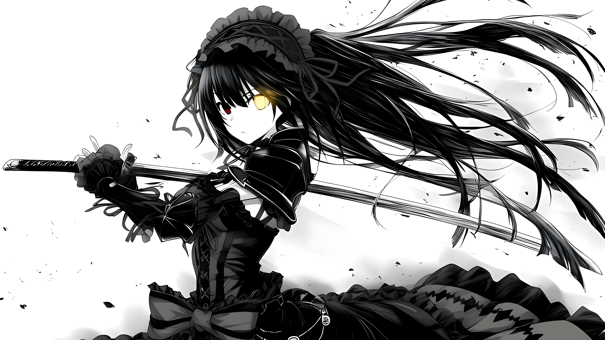

AOI.WELCOME TO MY WORLD
Aoi Kiyora
Một chút anime, một chút âm nhạc
ABOUT ME
Xin chào, mình là Aoi! Chào mừng bạn ghé thăm góc nhỏ của mình. Mình thích anime, nghe nhạc và kết nối với những người bạn mới. Hãy chọn một nền tảng bên dưới để cùng trò chuyện nhé!
🌸 Anime🎧 Music🎮 Gaming